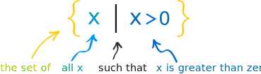
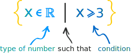

Set-Builder Notation
How to describe a set by saying what properties its members have.

But we can also "build" a set by describing what is in it.
Here is a simple example of set-builder notation:

It says "the set of all x's, such that x is greater than 0".
In other words any value greater than 0
Notes:
- The "x" is just a place-holder, it could be anything, such as { q | q > 0 }
- Some people use ":" instead of "|", so they write { x : x > 0 }
Type of Number
It is also normal to show what type of number x is, like this:

- The
 means "a member of" (or simply "in")
means "a member of" (or simply "in") - The
 is the special symbol for Real Numbers.
is the special symbol for Real Numbers.
So it says:
"the set of all x's that are a member of the Real Numbers,
such that x is greater than or equal to 3"
In other words "all Real Numbers from 3 upwards"
There are other ways we could have shown that:
On the Number Line it looks like: 
In Interval notation it looks like: [3, +∞)
Number Types
We saw  (the special symbol for Real Numbers). Here are the common number types:
(the special symbol for Real Numbers). Here are the common number types:
 |
 |
 |
|
 |
 |
| Natural Numbers | Integers | Rational Numbers | Real Numbers | Imaginary Numbers | Complex Numbers |
Example: { k 
 | k > 5 }
| k > 5 }
"the set of all k's that are a member of the Integers, such that k is greater than 5"
In other words all integers greater than 5.
This could also be written {6, 7, 8, ... } , so:
{ k 
 | k > 5 } = {6, 7, 8, ... }
| k > 5 } = {6, 7, 8, ... }
Why Use It?
When we have a simple set like the integers from 2 to 6 we can write:
{2, 3, 4, 5, 6}
But how do we list the Real Numbers in the same interval?
{2, 2.1, 2.01, 2.001, 2.0001, ... ???
So instead we say how to build the list:
{ x 
 | x ≥ 2 and x ≤ 6 }
| x ≥ 2 and x ≤ 6 }
Start with all Real Numbers, then limit them between 2 and 6 inclusive.
We can also use set builder notation to do other things, like this:
{ x 
 | x = x2 } = {0, 1}
| x = x2 } = {0, 1}
All Real Numbers such that x = x2
0 and 1 are the only cases where x = x2
Another Example:
Example: x ≤ 2 or x > 3
Set-Builder Notation looks like this:
{ x 
 | x ≤ 2 or x >3 }
| x ≤ 2 or x >3 }
On the Number Line it looks like:

Using Interval notation it looks like:
(−∞, 2] U (3, +∞)
We used a "U" to mean Union (the joining together of two sets).
Defining a Domain
Set Builder Notation is very useful for defining domains.

In its simplest form the domain is the set of all the values that go into a function.
The function must work for all values we give it, so it is up to us to make sure we get the domain correct!
Example: The domain of 1/x
1/x is undefined at x=0 (because 1/0 is dividing by zero).
So we must exclude x=0 from the Domain:
The Domain of 1/x is all the Real Numbers, except 0
We can write this as
Dom(1/x) = {x 
 | x ≠ 0}
| x ≠ 0}
Example: The domain of g(x)=1/(x−1)
1/(x−1) is undefined at x=1, so we must exclude x=1 from the Domain:
The Domain of 1/(x−1) is all the Real Numbers, except 1
Using set-builder notation it is written:
Dom( g(x) ) = { x
 | x ≠ 1}
| x ≠ 1}
Example: The domain of √x
Is all the Real Numbers from 0 onwards, because we can't take the square root of a negative number (unless we use Imaginary Numbers, which we aren't).
We can write this as
Dom(√x) = {x 
 | x ≥ 0}
| x ≥ 0}
Example The domain of f(x) = x/(x2 − 1)
To avoid dividing by zero we need: x2 - 1 ≠ 0
Factor: x2 - 1 = (x−1)(x+1)
(x−1)(x+1) = 0 when x = 1 or x = −1, which we want to avoid!
So:
Dom( f(x) ) = {x 
 | x ≠ 1, x ≠ −1}
| x ≠ 1, x ≠ −1}